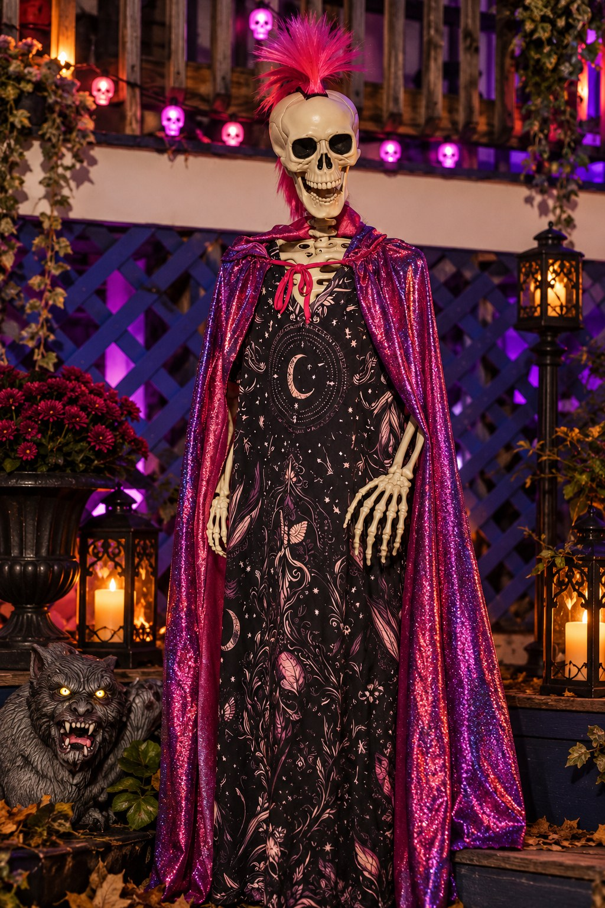

EXCLUSIVE SOCIETY REPORT · THE WAR OF THE WARDROBES
THREE WOMEN. TWO WARDROBES. ONE MOHAWK.
Gnomeville's Fashion Establishment Faces an Unprecedented Crisis

GERTIE MARROW arrives on the fashion scene. Society has requested a moment to collect itself. Gazette Society Desk portrait.
For years, Gnomeville's fashionable society has operated under a delicate understanding: Bette Moorecock sets the standards, everyone else attempts to meet them, and nobody asks how much any of it costs.
That understanding is now under threat.
The arrival of Lucy, a glamorous newcomer whose extensive wardrobe required its own luggage operation, was initially dismissed by established society figures as a temporary disturbance. That assessment has since been revised.
Sources report that Lucy possesses enough clothing to maintain an entirely different personality for every day of the month. More troubling still, she appears perfectly willing to do so.
Bette Moorecock, whose longstanding position as Gnomeville's foremost fashion authority has rarely been challenged, has reportedly responded by increasing her public appearances and making several pointed remarks about the difference between owning clothes and having style.
Lucy, when approached for comment, opened her beak. Our correspondent withdrew.
ENTER GERTIE MARROW
Just as society observers were preparing for a prolonged rivalry between Lucy and Bette, a third contender emerged from an entirely unexpected quarter.
Gertie Marrow has entered the fashion arena.
Long associated with a more restrained approach to personal presentation, Miss Marrow has recently undergone what one observer described as "a complete wardrobe situation."
Her collection of garments has reportedly expanded at an extraordinary rate. But it is her latest hairstyle that has truly shaken Gnomeville's social establishment.
A HOT PINK MOHAWK.
Witnesses describe the look as bold, unapologetic, and structurally impressive. One resident reportedly dropped an entire biscuit upon seeing it.
Miss Marrow has offered no formal explanation for her transformation. Her companion, Paw-Paw, was asked whether he approved of the new look. He stared silently ahead. This newspaper interprets his response as supportive.
THE QUESTION ON EVERYONE'S LIPS
Is Gnomeville witnessing the beginning of a three-way fashion war?
Bette represents established elegance. Lucy represents theatrical glamour. Gertie represents the increasingly popular philosophy that one should wear whatever one pleases, particularly if it alarms the neighbors.
The Gazette has requested comment from all three parties. Bette's representatives have not responded. Lucy has reportedly requested a larger photograph. Gertie is believed to be shopping.
DEVELOPING STORY.
SOCIAL SPECULATION · EXCLUSIVE
PAW-PAW AND GERTIE: GNOMEVILLE'S MOST INTRIGUING COUPLE?
A quiet gentleman, a flamboyant companion, and a pink dog who knows too much.
While Gertie's increasingly extravagant wardrobe has captured public attention, society observers have begun asking questions about the gentleman frequently seen at her side.
Paw-Paw, a longtime resident known for his reserved demeanor, has recently been spotted accompanying Miss Marrow on several occasions. The pair have also been seen in the company of Bowser, their distinctive pink skeletal dog.
Although neither Paw-Paw nor Gertie has publicly defined the nature of their relationship, their frequent appearances together have fueled considerable speculation.
One witness described them as "inseparable." Another described Paw-Paw as "standing there." Both accounts are considered credible.
AN UNLIKELY SOCIAL ASCENT
Friends of the couple suggest that Gertie's influence may be encouraging Paw-Paw to participate more actively in Gnomeville's social life. Previously content to remain quietly in the background, he has recently been observed standing in entirely different locations. The transformation has been remarkable.
Asked whether wedding bells might eventually ring, a source close to the couple replied: "Well, they certainly have a dog together."
The Gazette considers this significant.
Society Editor's Note: No engagement has been announced. Nevertheless, the Society Desk has begun compiling a preliminary guest list.
SEEN & OVERHEARD
Because someone was always watching.
AT THE TWISTED SISTERS CAFÉ
Cecil Glowbones was overheard explaining the distinction between a properly decorated cake and "an act of deliberate culinary insubordination." Webster, Esq., was seen taking notes. No charges have been filed. Yet.
IN THE FASHION DISTRICT
A prominent resident remarked that hot pink was "a desperate bid for attention." Moments later, Gertie Marrow passed wearing her mohawk. The resident declined further comment.
AT A MUNICIPAL FUNCTION
Mayor Thimblewick was spotted leaving a reception carrying a bottle of red wine. His office maintains the bottle was being transported for administrative purposes.
NEAR THE CAFÉ
Liza Joy approached several individuals with "an extremely enthusiastic expression." All three agreed to be her friends. Two were unaware negotiations had begun.
AT THE NASKERMAN RESIDENCE
Milo Naskerman occupied a chair that moments earlier had been occupied by someone else. The incident is described as a peaceful transfer of power.
THE GNOMEVILLE SOCIAL REGISTER
Who's Who, Who's New, and Who's Pretending Not to Care
BETTE MOORECOCKEstablished Fashion Authority
An arbiter of taste whose position has recently attracted unwanted competition.
LUCYNew Arrival and Wardrobe Enthusiast
An increasingly prominent figure. Frequently photographed. Rarely cooperative.
GERTIE MARROWEmerging Style Icon
Her expanding wardrobe and hot pink mohawk have captivated Gnomeville.
PAW-PAWGentleman of Few Words
His silence is frequently interpreted as agreement.
BOWSERCompanion Animal and Social Accessory
A pink skeletal dog whose fashion influence remains to be determined.
CECIL GLOWBONESCake Decorating Tsar
Exacting standards and an expansive interpretation of authority.
WEBSTER, ESQ.General Counsel
Frequently seen with Cecil; remarkably skilled at avoiding conversational entanglement.
HIS HONOR, MAYOR THIMBLEWICKMayor of Gnomeville
A familiar presence at receptions offering refreshments. Departures seldom announced.
THE SOCIAL CALENDAR
Upcoming Events of Considerable Importance
TWISTED SISTERS AUTUMN SOCIAL
Date: Subject to clean tablecloths. Coffee, cake, music, and possible unscheduled confrontations. Dress code: festive. Shoes recommended.
FASHIONABLE LADIES' AUTUMN LUNCHEON
Invitations reportedly issued; guest list withheld. Several residents have announced they would not attend even if invited.
PAW-PAW & GERTIE'S INFORMAL GATHERING
No invitations, date, or confirmed event. The Society Desk has reserved space for photographs.
SOCIETY NOTICES
CONGRATULATIONS, GERTIE!
On becoming one of Gnomeville's most discussed fashion personalities. Several residents request advance warning of the next ensemble.
A WARM WELCOME TO LUCY
We look forward to chronicling her contributions to local culture. Future interviews are respectfully requested without lunging.
The Society Desk welcomes birthdays, engagements, anniversaries, achievements, and significant changes in social standing. Submissions may be made by those concerned or anyone who believes they know something interesting. Verification is encouraged but not mandatory.